A10 - Lead screw tensile tester
Rick Bhattacharya · Antonio Chiocca · Patrick Klauser
MEGR 2157 · Total time spent: 10 hours
Objective
We designed a benchtop tensile tester with two identical lead screws and a moving 6061 aluminum crosshead. The design requirements are a 2-kN specimen load, a crosshead speed of 1–50 mm/min, and a minimum safety factor of 4. We sized the screws and crosshead, selected matching nuts and flanges, and compared the initial and rounded-corner crossheads using FEA.
The assembly includes the frame, screws, nuts, flanges, and crosshead. The grip connection, screw end supports, and mechanical synchronization are outside the modeled assembly.
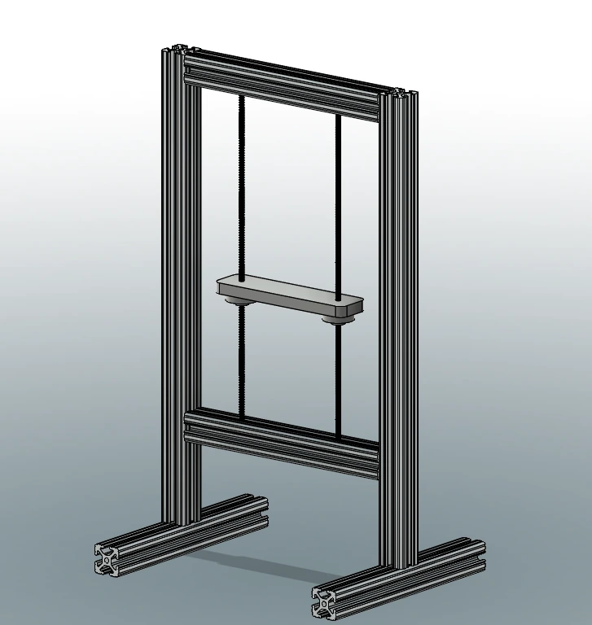
Team contributions
| Team member | Contribution |
|---|---|
| Rick Bhattacharya | Modeled the tester assembly and crosshead, prepared the crosshead drawing, and completed one of the FEA studies. |
| Antonio Chiocca (AJ) | Worked through the nut-thread and crosshead calculations, checked the screw calculations, and helped with FEA. |
| Patrick Klauser | Worked through the lead screw diameter, rotational speed, and torque calculations and completed another FEA study. |
Requirements and design inputs
| Input | Value |
|---|---|
| Maximum specimen load, W | 2,000 N |
| Number of lead screws | 2, identical |
| Nominal axial load per screw, F | 1,000 N, assuming centered loading and equal sharing |
| Required safety factor, n | 4 |
| Required crosshead speed | 1–50 mm/min |
| Minimum screw length | 18 in |
| Selected CAD screw | McMaster 99030A981, 1018 steel, 1/4″-16 Acme, right hand, single start, 18 in |
| Matching nut / flange in CAD | 95072A881 / 95082A641 |
| Screw lead, ℓ | 0.0625 in/rev = 1.5875 mm/rev |
| Assumed steel yield strength | 370 MPa; a material-condition assumption |
| Crosshead material | 6061 aluminum |
| Crosshead length / width | 8.00 in / 2.00 in |
| Crosshead thickness | 0.563 in |
| Distance between screw centers | 6.00 in |
| Maximum permitted crosshead deflection | 0.100 mm |
The screw centers are 6 in apart, leaving the specimen region between them.
Lead screw sizing — Patrick Klauser
Axial load and minimum root diameter
Knowns: W = 2,000 N, two screws, n = 4, and assumed steel yield strength Sᵧ = 370 MPa. Unknowns: minimum screw area and root diameter. With the specimen centered between the screws, each nut carries 1,000 N.
RL = RR = W/2 = 1,000 N
σ = F/A ≤ Sy/n
Amin = nF/Sy
A = πdr²/4
dr,min = √[4nF/(πSy)]
σallow = 370/4 = 92.5 MPa
Amin = 4(1,000)/370 = 10.81 mm²
dr,min = √[4(4)(1,000)/(π × 370)] = 3.710 mm = 0.1461 in
The minimum root diameter from axial stress is 0.1461 in. The selected screw has a nominal outside diameter of 0.250 in. We assumed a 370-MPa yield strength for cold-finished 1018 steel; the purchased screw’s material condition must meet that assumption. Online Metals: 1018 properties.
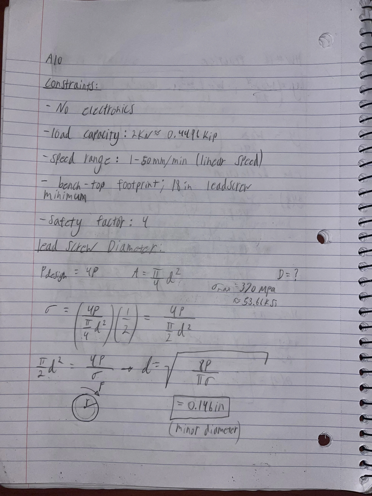
Rotational speed range
Knowns: single-start 1/4″-16 thread and v = 1–50 mm/min. Unknowns: screw speed N and angular velocity ω.
ℓ = p × number of starts = 1.5875 mm/rev
v = Nℓ → N = v/ℓ
Nmin = 1/1.5875 = 0.6299 rpm
Nmax = 50/1.5875 = 31.496 rpm
ω = 2πN/60 = 0.0660–3.298 rad/s
The required screw speed is 0.6299–31.496 rpm. We corrected the angular-velocity units in the initial calculation: 31.496 rpm corresponds to 0.5249 rev/s or 3.298 rad/s. Both screws must rotate together to keep the crosshead level.
Torque at maximum specimen load
The worksheet inputs are Q = 1,000 N per screw, μ = 0.80, lead ℓ = 0.0625 in/rev, and mean thread radius rm = 0.1048 in. The friction coefficient and radius are worksheet assumptions. The radius has not been verified against the selected screw’s pitch diameter.
The worksheet equation treats the thread as square. An Acme thread has a 29° included angle, so the friction term is corrected using the half-angle α = 14.5° and μ′ = μ/cos α. Acme torque derivation, pp. 190–195; Autodesk power-screw calculation.
μ′ = μ/cos(14.5°)
tan λ = ℓ/(2πrm)
Ft = Q(tan λ + μ′)/(1 − μ′ tan λ)
T = Ftrm
T = Qrm(ℓ + 2πμ′rm)/(2πrm − μ′ℓ)
Ft = 224.728 lbf
T = 23.551 lbf·in per screw
Using μ directly in the square-thread equation gives 22.817 lbf·in with the same inputs. The Acme-angle correction gives 23.551 lbf·in. Both are conditional thread-torque calculations; neither includes thrust-bearing friction, transmission losses, or crosshead weight.
The final handwritten page records 33.8 lbf·in from approximately 0.21 kip × 0.161 in. The 0.161-in value is a diameter in the thread calculation and cannot be used as the mean radius of a 0.250-in-diameter screw. The calculation above retains the earlier worksheet radius consistently. A final drive-torque selection requires the actual pitch radius and friction conditions.
Combined axial load and torque
The 0.1461-in root-diameter result checks axial stress only. To check whether the selected 1/4-in screw could meet n = 4 under the worksheet’s μ = 0.80 assumption, we also combined axial and torsional stress using the Acme thread torque above.
τ = 16T/(πd³)
σvM = √(σa² + 3τ²)
n = Sy/σvM
For an optimistic solid section with d = 0.250 in:
σa = 4.580 ksi; τ = 7.677 ksi
σvM = 14.063 ksi
n = 53.664/14.063 = 3.816
Even this full-diameter solid-section estimate is below n = 4 with the worksheet torque assumptions. The actual threaded root is smaller. The axial-only calculation therefore does not approve the selected screw for combined loading; the screw selection and its friction assumptions remain unresolved. Combined-stress yield criterion.
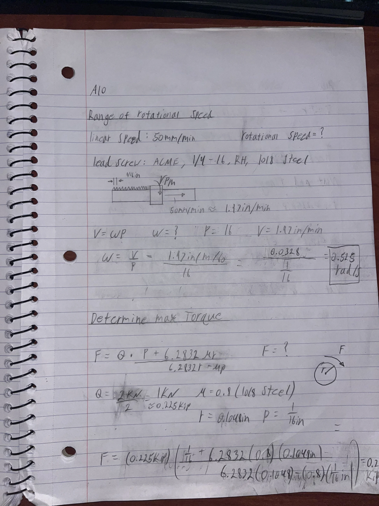
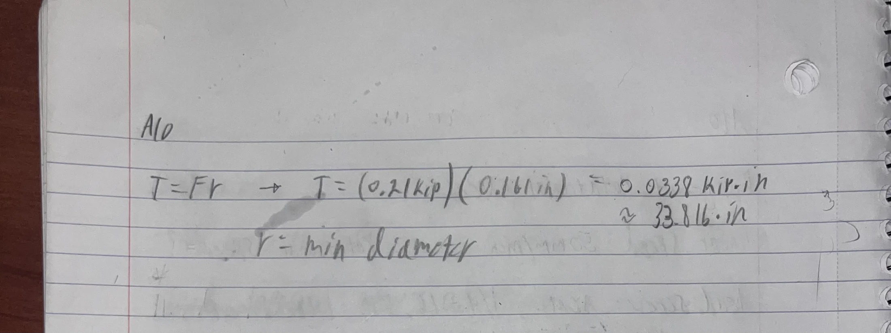
Nut and flange analysis — Antonio Chiocca
We selected bronze nut 95072A881 and mounting flange 95082A641. The nut’s internal 1/4″-16 Acme thread matches the screw, and its external 9/16″-18 thread fits the flange. Four mounting bolts at each flange transfer the screw reaction into the crosshead.
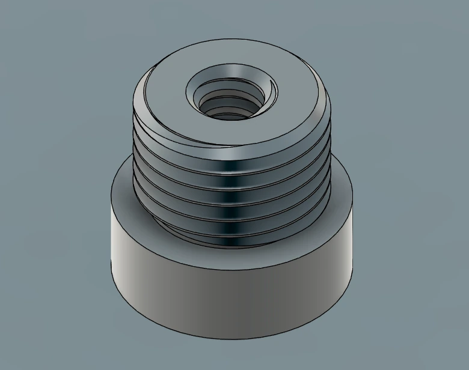
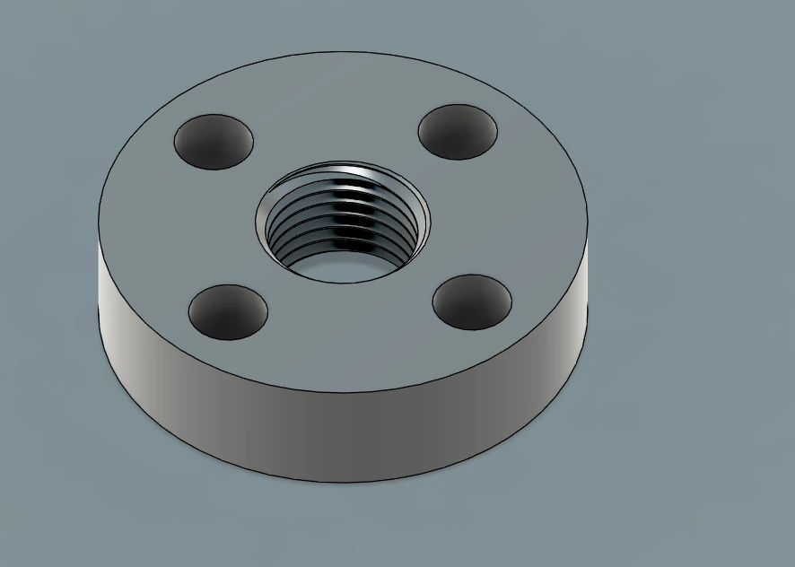
Internal thread bending
The worksheet assumes F = 224.81 lbf per nut, p = 0.0625 in, engagement length Le = 0.375 in, and equal loading across six threads. It uses dr = 0.161 in for the bending-strip circumference. This is a conservative worksheet idealization; the actual nut-root diameter and thread thickness were not verified. Unknowns: bending stress under that model and required yield strength.
Fthread = F/Nt
Mthread = (F/Nt)(p/4)
Zthread = (πdr)(p/2)²/6
σb = M/Z = 6F/(Ntπdrp)
σb = 6(224.81)/[6π(0.161)(0.0625)] = 7.111 ksi
Required Sy,nut ≥ nσb = 4(7.111) = 28.45 ksi
The calculated bending stress is 7.111 ksi. A safety factor of 4 requires a nut yield strength of at least 28.45 ksi under this equal-thread-loading model. A verified nut yield strength was not recorded, so a numerical nut safety factor is not reported.
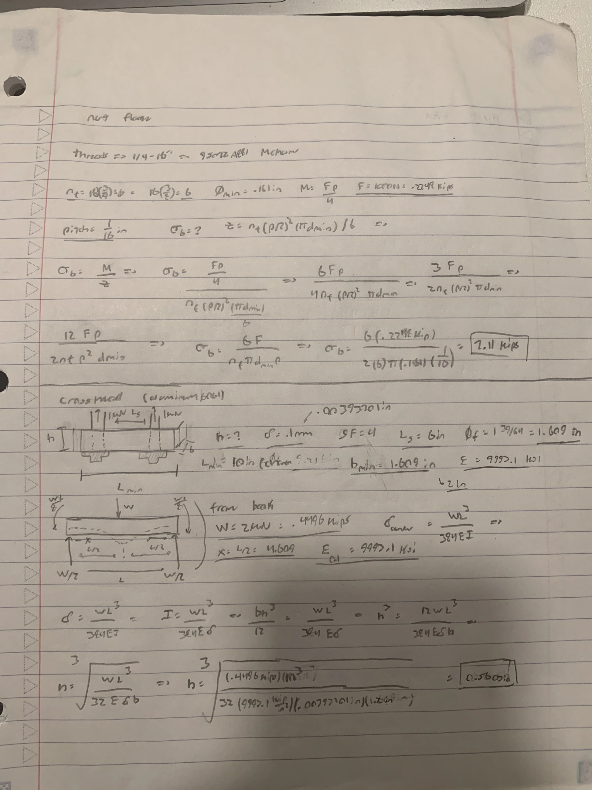
Crosshead beam analysis — Antonio Chiocca
We used the flange diameter to establish a minimum crosshead width. The selected flange is 1 39/64 in, or 1.6094 in, in diameter. A 2-in width gives room around that interface. The drawing places the screw centers 6 in apart within an 8-in overall length; the outer 1-in portions extend beyond the screw centers.
Knowns: W = 2,000 N, support span L = 152.4 mm, width b = 50.8 mm, and crosshead thickness h = 14.3002 mm (0.563 in). The worksheet uses E = 9,993.1 ksi, approximately 68,900 MPa, for 6061 aluminum. Unknowns: bending stress and center deflection.
Bending strength
For a simply supported beam with a centered point load:
Mmax = WL/4 = 76,200 N·mm
I = bh³/12 = 12,379.7 mm⁴; c = h/2
σmax = Mc/I = 3WL/(2bh²)
σmax = 44.01 MPa
The beam calculation uses the gross cross section. We examined the mounting-hole stress concentrations separately in FEA.
Deflection and support restraint
The original worksheet uses WL³/(384EI), which is not the center-point-load equation. For the centered specimen load, the corrected equations are:
δsimple = 0.1729 mm
Fully fixed ends: δmax = WL³/(192EI)
δfixed = 0.04323 mm
The worksheet’s initial sizing result is approximately 0.560 in; the CAD drawing specifies 0.563 in. Recalculating the center-point-load deflection at the CAD dimensions gives 0.1729 mm for simple supports and 0.04323 mm for fixed ends. Only the fixed-end result meets the 0.100-mm limit, so the mounting restraint affects the conclusion.
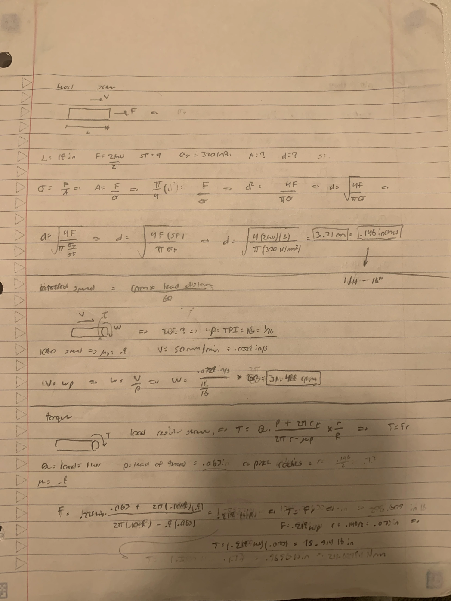
CAD assembly and drawing — Rick Bhattacharya
We imported the McMaster screws, nuts, flanges, and T-slot framing, then modeled the crosshead around the two flange interfaces.
| Component | Source / design role |
|---|---|
| Lead screws | 99030A981, two 18-in precision Acme screws in CAD |
| Bronze nuts | 95072A881, two |
| Mounting flanges | 95082A641, two |
| Short framing members | 47065T414, imported 1-ft framing |
| Uprights | 47065T21, imported 2-ft framing |
| Crosshead | Custom 6061 aluminum component |
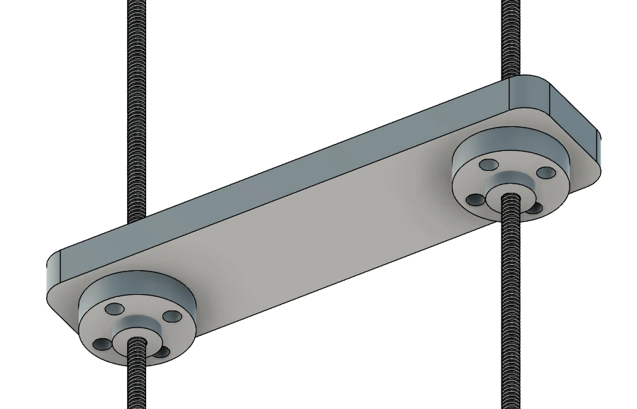
The crosshead has two Ø0.255-in screw-clearance holes and eight Ø0.26-in mounting holes. The mounting-hole groups sit around the two screw axes. The original plate had square outside corners; the revision rounds those corners while retaining the two mounting regions.
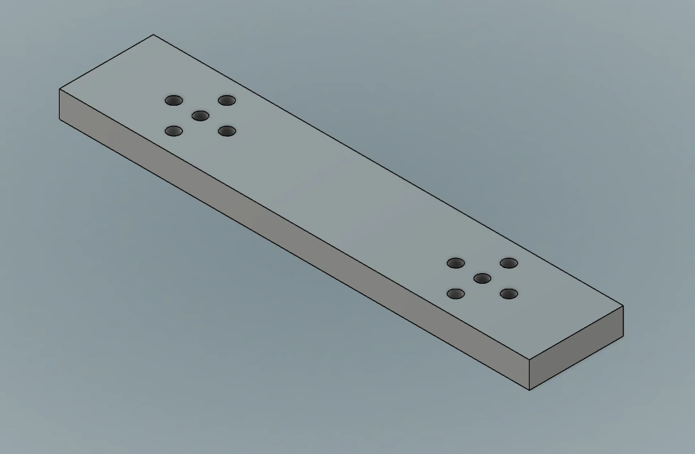
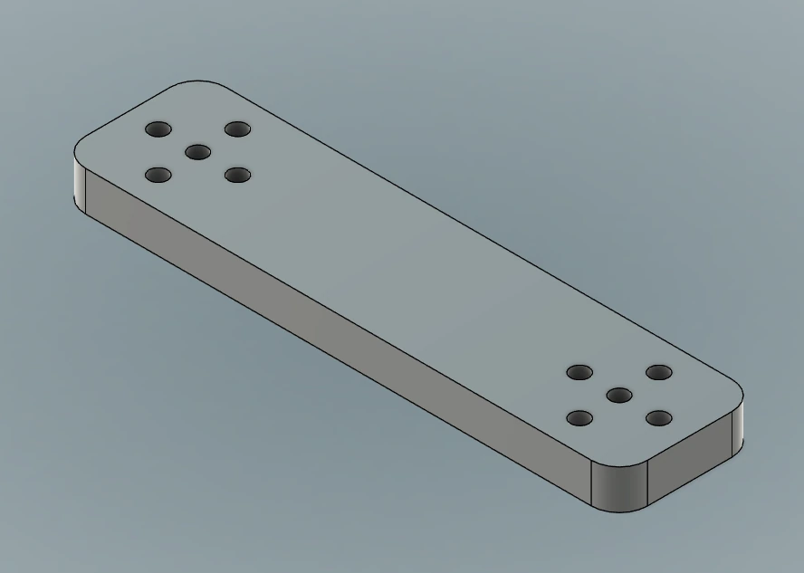
Crosshead multiview drawing
The crosshead drawing includes top, front, side, and isometric views, overall dimensions, screw spacing, and hole diameters.
Parameters and interface intent
The crosshead uses a 6-in screw-center spacing and two matching flange-hole patterns. The Ø0.255-in center holes provide screw clearance; the eight Ø0.26-in holes attach the flanges. The specimen load acts midway between the screw axes.
Crosshead FEA and geometry revision — Rick Bhattacharya, Patrick Klauser, and Antonio Chiocca
We compared the initial plate and the rounded-corner revision using static stress results in Fusion. The design load path is a centered 2-kN specimen force into the crosshead, balanced by reactions through the nut/flange mounting regions. The constraint symbols in the recorded plots are located at the mounting holes. These idealized restraints represent the local attachment regions rather than the flexibility of the entire tester frame.
Recorded results
| Metric | Initial plate | Rounded-corner revision |
|---|---|---|
| Maximum von Mises stress | 2.853 ksi / 19.67 MPa | 3.557 ksi / 24.52 MPa |
| Maximum plotted resultant displacement | Approximately 0.003 mm | Approximately 0.012 mm |
| Minimum FOS | Not numerically recorded | 11.212 |
| Critical stress region | Near the flange mounting holes | Near the flange mounting holes |
| Largest displacement region | Between the mounting regions | Between the mounting regions |
The rounded-corner study showed 24.7% higher peak stress and approximately four times the displacement of the initial study. The revised study reports a minimum FOS of 11.212 and maximum resultant displacement of approximately 0.012 mm. These are results for the recorded model; the applied load and vertical grip displacement were not separately documented.
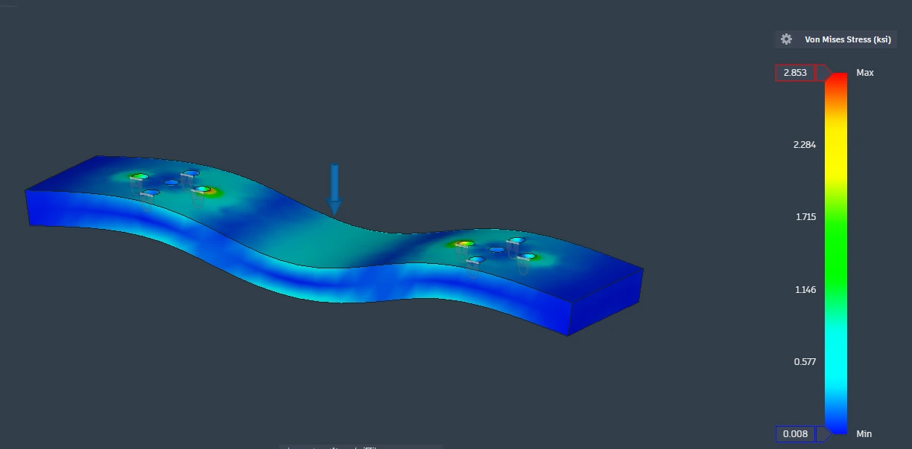
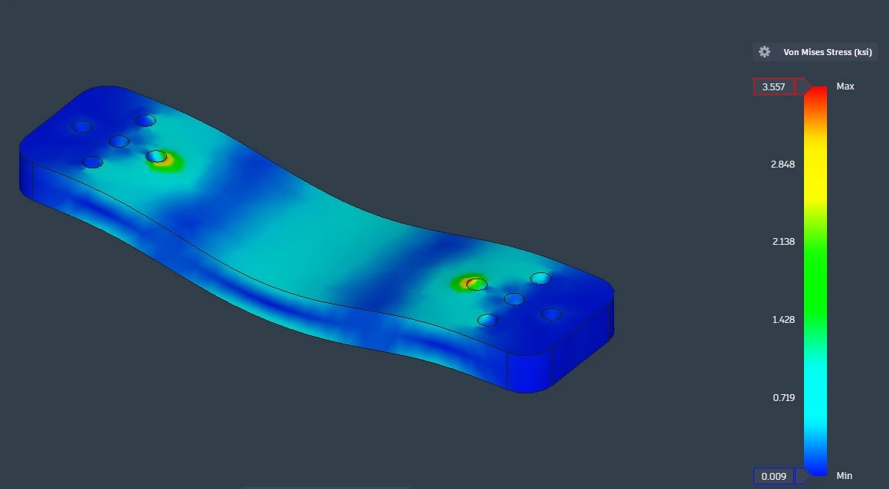
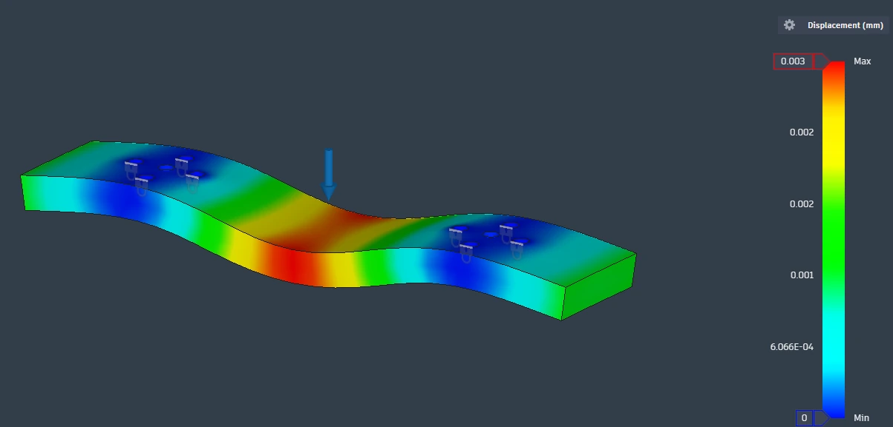
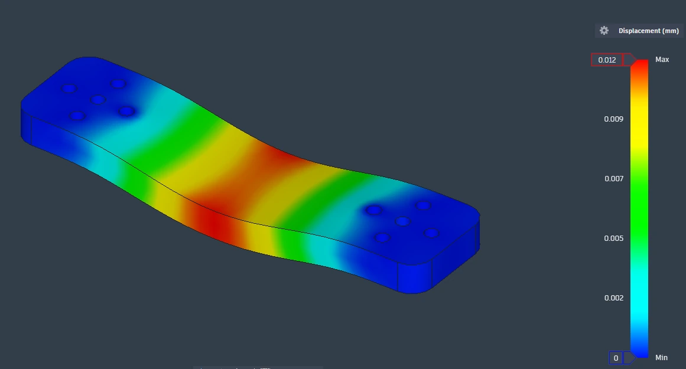
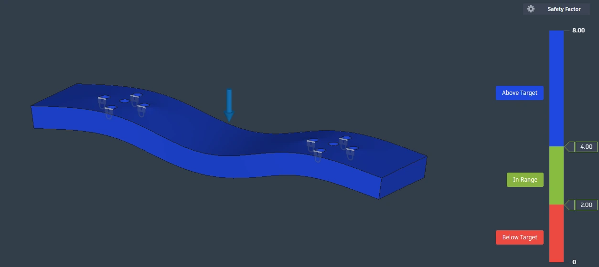
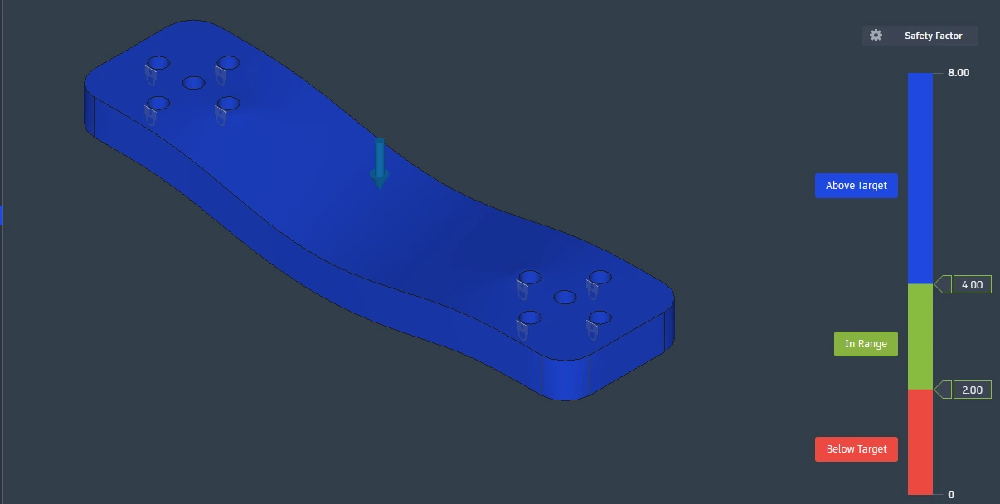
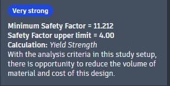
The initial FOS plot is capped at 8; its exact minimum was not recorded. Crosshead mass and volume changes were not recorded. Peak stress remains near the attachment holes, and displacement is greatest between the supports. The plots show resultant displacement; vertical grip displacement and twisting were not measured separately.
Interpretation of the studies
Mesh-refinement results and element counts were not recorded. The response plots also do not show the applied load magnitude. These two geometry studies therefore document the recorded before-and-after response without establishing mesh convergence. Fusion mesh convergence guidance.
The beam and FEA results depend on the support restraints and applied load. The recorded plots do not establish that both FEA studies used the same 2-kN load.
Bill of materials
The purchased components total $299.91, excluding crosshead material and machining.
| Item | Quantity | Component | Cost per item | Line total | Purchase link |
|---|---|---|---|---|---|
| 1 | 1 | 36-in Acme lead screw stock | $12.74 | $12.74 | 98935A803 |
| 2 | 2 | Nut mounting flange | $37.06 | $74.12 | 95082A641 |
| 3 | 2 | Bronze lead screw nut | $35.78 | $71.56 | 95072A881 |
| 4 | 5 | 1-ft T-slot framing member | $17.15 | $85.75 | 47065T414 |
| 5 | 2 | 2-ft T-slot framing member | $27.87 | $55.74 | T-slot framing |
| Total | $299.91 |
The BOM lists one 36-in stock screw; the CAD uses two 18-in precision screws. These are different catalog selections. Two finished 18-in screws require stock allowance for cutting.
Lessons learned
Splitting the specimen load between two screws simplified the axial sizing, but it did not remove the need to define the support arrangement. The root diameter carries the axial stress, and the mean thread diameter enters the torque calculation. Using the outside diameter for both would hide that difference.
The speed calculation was sensitive to units. Dividing mm/min by mm/revolution gives rpm directly. Converting that result into radians per second requires an additional factor of 2π/60. Writing the units at each step caught the mislabeled intermediate result in our first worksheet.
The crosshead work showed why support conditions belong beside the result. The same plate gives a different deflection when its ends can rotate than when its mounting regions are fixed. A small displacement in the solver does not explain that restraint by itself.
Rounding the outside corners changed the recorded response, but the peak stress stayed near the flange holes. That made the connection regions the main focus of our interpretation. The rounded-corner revision showed higher stress and displacement in the recorded studies.
Total time spent: 10 hours.
CAD files and supporting documents
| File | Contents |
|---|---|
| Tester assembly — Fusion F3Z | Assembly archive with its referenced components |
| Crosshead — Fusion F3D | Crosshead CAD model |
| Original drawing export | Original multiview drawing by Rick Bhattacharya |
| Bill of materials | Original cost sheet |
| Bill of materials CSV | Editable, typed cost table with purchase links |
| Submission PDF | Team report, calculations, figures, and original drawing |
| Original handwritten work | The five original calculation photographs |
References
- MEGR 2156/2157, Lead Screw System Design Part 1: assignment requirements, load, speed range, safety factor, and crosshead deflection limit.
- McMaster precision Acme screws and nuts: thread compatibility, selected screw and bronze nut.
- McMaster nut mounting flanges: 95082A641 mounting dimensions.
- Roton Acme engineering data: reference root diameter and screw/nut selection context. Roton values are not a certification of a different manufacturer's screw.
- Online Metals 1018 guide: reference steel properties.
- IARE Machine Design course notes, pp. 190–195: Acme thread angle and corrected thread torque.
- Autodesk power-screw calculation: mean screw diameter, thread-angle correction, and strength checks.
- SOLIDWORKS von Mises criterion: combined-stress yield check.
- Missouri S&T mechanics formula sheet: bending and center-point-load deflection equations.
- Autodesk Fusion mesh convergence: refinement and consistent-location stress comparison.